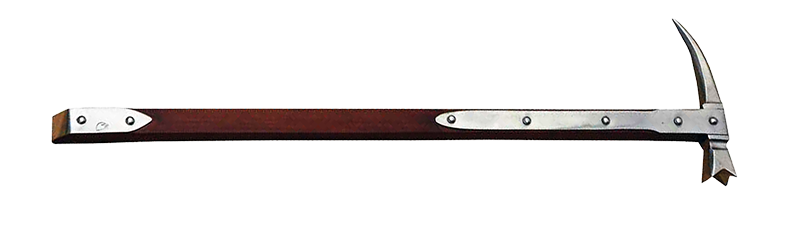

War hammer
The war hammer evolved in the 11th and 12th centuries from simple tools such as the pick and the mallet. It consisted of a hammer head (used to damage armor plates and joints), balanced on the opposite side by a spike, a blade, or a pick. Some variants also featured a spike at the top of the shaft. In the 14th century, the war hammer was typically wielded with one hand and had a shaft proportion similar to that of a mace. In the 15th century, the head was also mounted on long poles, giving rise to pole-mounted variants such as the Lucerne hammer.